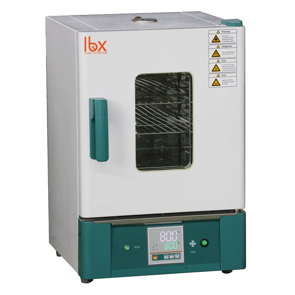

Estufa Ventilada Labbox OVF

| Estufa Ventilada Labbox OVF | |
|---|---|
| Localização: | Lab. 1.89 Edf. 7 |
| Responsável: | Margarida RamiresRodrigo Borges |
| Operador: | Utilizador |
| Princípio de Funcionamento: | Secagem Ventilada |
| Fabricante: | Labbox Labware S. L. |
| Modelo: | OVF |
| Tipo: | Estufa Ventilada |
| Website: | Labbox Labware, S. L. |
Estufa de circulação forçada Labbox OVF, concebida para processos de secagem, aquecimento, tratamento térmico e outras aplicações laboratoriais que requerem controlo e distribuição uniforme da temperatura. O equipamento permite trabalhar numa faixa de 40 °C a 300 °C, dispondo de controlo de temperatura por microprocessador e circulação forçada de ar para melhorar a homogeneidade térmica no interior da câmara.
A câmara interior em aço inoxidável e as prateleiras ajustáveis facilitam a utilização e limpeza do equipamento, enquanto a porta com visor de vidro duplo permite acompanhar as amostras sem necessidade de abrir a câmara. O sistema inclui ainda funções de proteção contra sobreaquecimento, alarme de falha do sensor e temporizador.
Principais Aplicações
- Secagem de amostras e reagentes;
- Aquecimento de materiais;
- Tratamento térmico;
Específicações Técnicas:
| Específicação | Valor |
|---|---|
| Fabricante | Labbox Labware S. L. |
| Modelo | OVF |
| Temperatura Mínima de Operação | +40 °C |
| Temperatura Máxima de Operação | +300 °C |
| Resolução de Temperatura | 0.1 °C |
| Flutuação de Temperatura | ± 1°C |
| Capacidade | 125 L |
| Dimensões (L x P x A) | 64.0 cm x 64.0 cm x 93.0 cm |